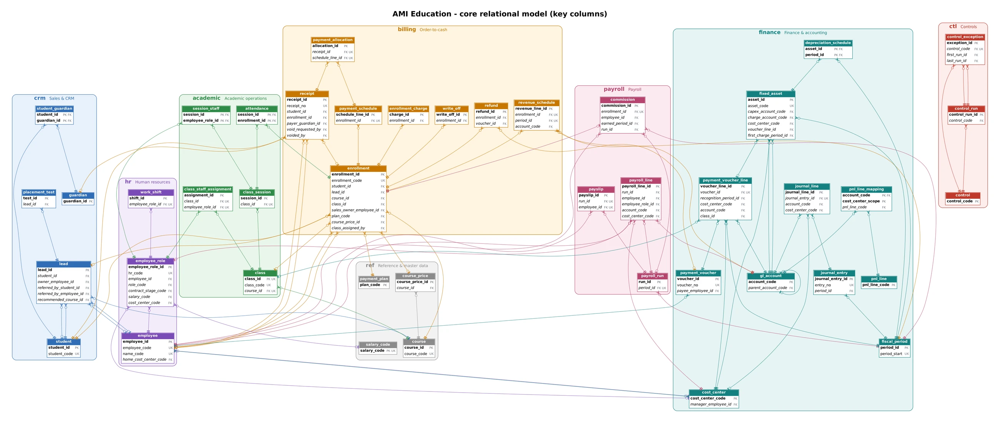
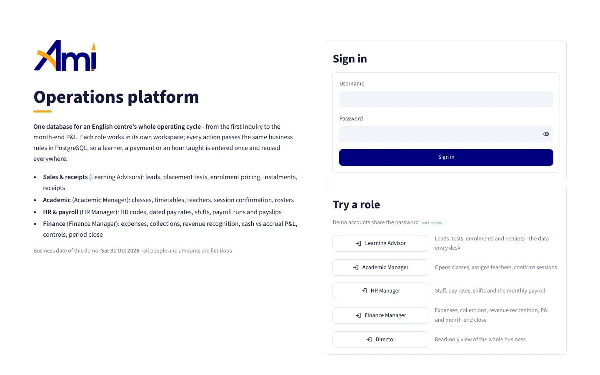
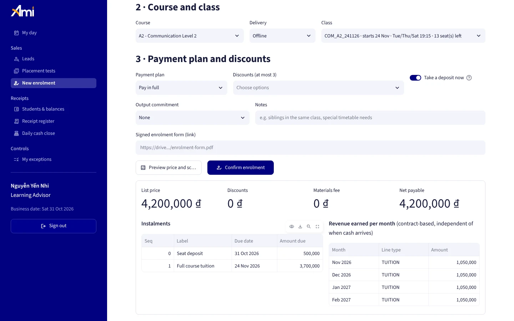
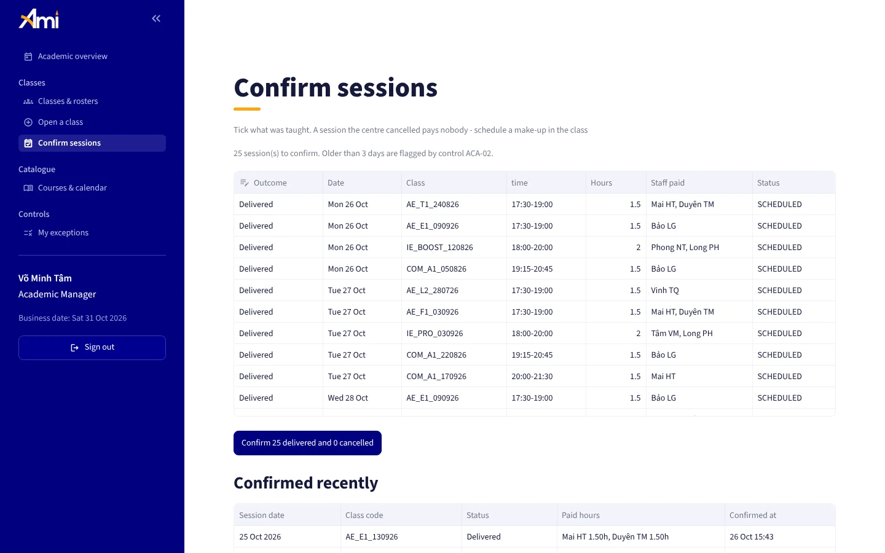
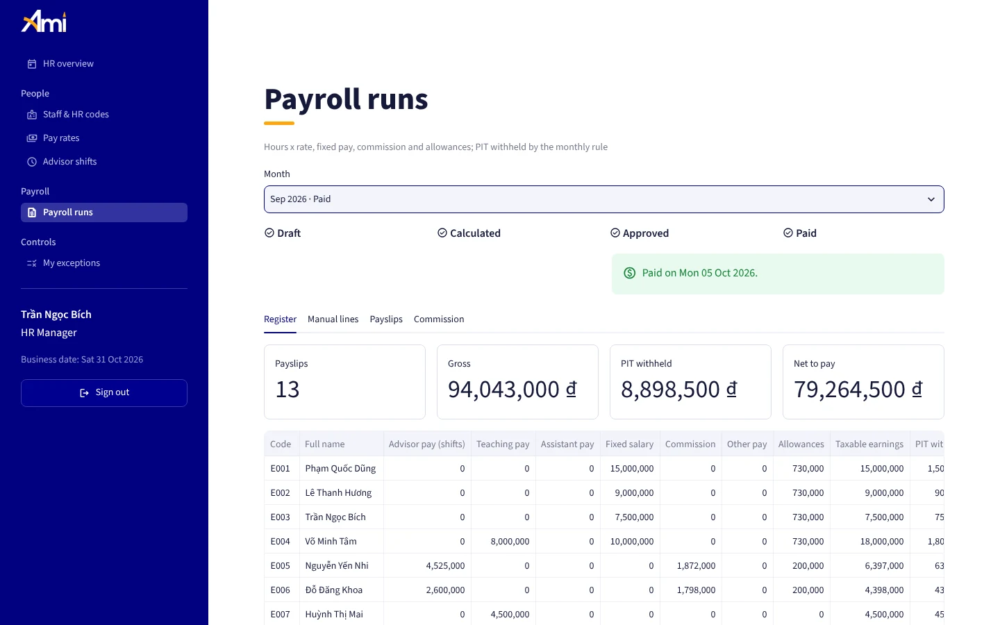
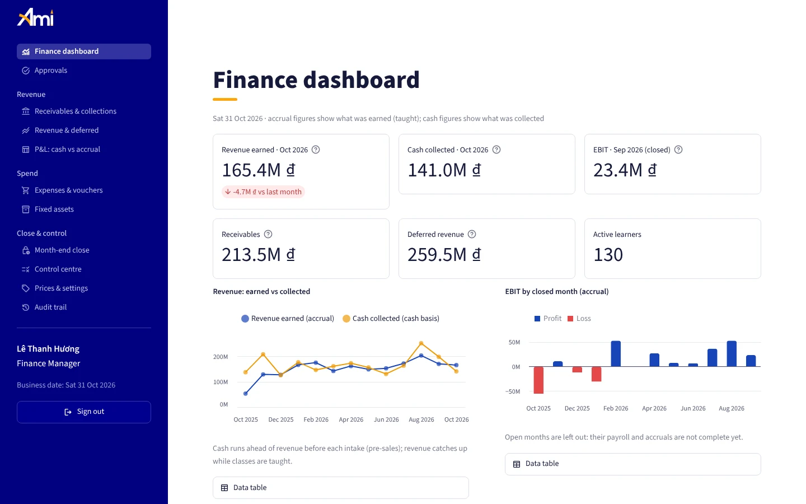
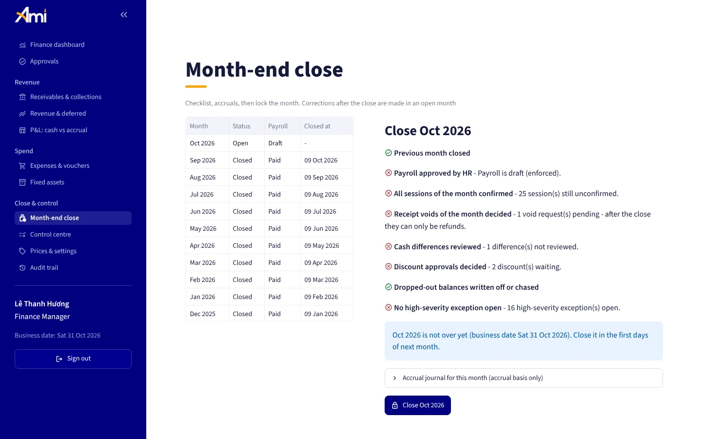

Rules lived in formulas
Pricing, payroll and revenue logic sat in cells that any user could overwrite. When a link between workbooks broke, data simply stopped flowing until someone noticed.
Phase 2 · 2026 · Portfolio rebuild
Phase 1 proved AMI Education's operating logic in Excel. Phase 2 rebuilds that logic as a PostgreSQL database and a web application: every business rule is enforced by the database, every role works in its own workspace, and a simulated year of fictitious data shows it running from the first inquiry to the month-end P&L.
01 / Why a phase 2
Data modelling Business rules Access control Financial controls
Pricing, payroll and revenue logic sat in cells that any user could overwrite. When a link between workbooks broke, data simply stopped flowing until someone noticed.
Sales staff and managers worked in the same files. Nothing stopped an entry in the wrong area, and there was no field-level record of who changed what.
Closing a month meant checking payroll, receipts and expenses by hand, and nothing prevented a closed month from being edited afterwards.
The five workbooks become one PostgreSQL database: keys and constraints instead of lookups, so a learner, a payment or an hour taught is entered once and reused everywhere.
Unassigned leads, unconfirmed sessions, discounts outside policy, unclosed cash days: exceptions land in a queue until someone resolves them, and every change is audited.
Pricing, revenue recognition, payroll, permissions and period close each have automated tests that run whenever the code changes.
02 / Solution design
Interactive: select the button to view in full size

One simulated year of operations, generated day by day through the same rules the application uses. Every person and amount is fictitious.





